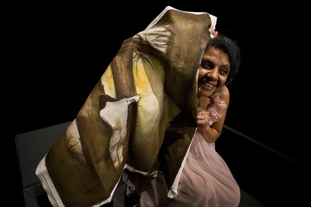
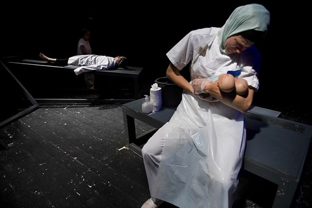
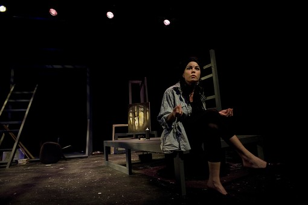

|
|
|
Browsing
Contact Us |
Campaigners |
Face to Face |
Tribune |
Interview |
News |
On the Web |
One Million |
Report
Farsi | Français | German | Italian | Spanish | العربية Also in this section
|

Iraqi Women: a Strategy of Endurance and Change in the Play Nine Parts of DesireShahrzad Amin Friday 7 October 2011 Change for Equality: During the last days of August and the first weeks of September, the Foratt Theatre in Malmo, Sweden, was host to women from Iraq, Iran, and Egypt who presented the play Nine Parts of Desire. The play, written by US-Iraqi playwright Heather Raffo, concerns the destinies of nine Iraqi women living in the shadow of war.
 The women - a street vendor, a painter, a doctor, an exiled political activist, a witness to a death, one mourning the dead - through a series of dramatic monologues raise the curtain on the life and reality of women caught up in war. The director and producer emphasize that these are not classic victim’s roles, but above all are women advocating a strategy of endurance. Three actresses - Donia Massoud, Eleonora DeLougheri Nordin, and Sanna Turesson - perform their roles in the three languages of Arabic, English, and Swedish. The audience is seated in the middle of the theatre on rotating chairs, and the monologues are performed in a circle around them. The Egyptian actress Donya Massoud travelled from Egypt to Malmo in order to appear in the play.
 Heather Raffo wrote Nine Parts of Desire after the US attack on Iraq and the work has been staged several times in various countries, either by herself or by others. This is the first time the play has been put on in Sweden, albeit with some small changes. In this Swedish version, with Raffo’s approval, an extra section has been added to the play. The co-writer for this version of Nine Parts of Desire is Parvin Ardalan, guest journalist of the city of Malmo. The part she has written adds a particular depth and variety to the performance at the Foratt Theatre. Her piece is like an invading force, not part of the play itself as staged for the audience, but broadcast from loudspeakers inside the theatre in Arabic, Swedish, and English. As the sound is broadcast, it is the audience’s seats, rather than the stage, that are lit up, and the audience finds itself in the actors’ place. In her interviews with the Swedish newspaper Svenska Dagbladet, Radio Sweden, and other Swedish media outlets, Parvin Ardalan recognizes that there are a great many similarities between her own experiences of living through war and the atmosphere and events of the play: on one hand, the growth of militarism, on the other, the rise to power of fundamentalist currents. She points to the fact that humans who have a first hand experience of war both have much in common and yet have had divergent experiences. Nevertheless, she insists that the play does not simply relate to events in a limited geographic area, but that its action could take place anywhere in the world, and thus is without frontiers. She remarks that what happened in Iraq deeply affected the lives of its people, especially the women. If we believe that the life of Iraqi women is part of our lives too, then we shall not pass them by in indifference. Iraq could be an image of many of our futures. In a militarized world we cannot sit idly by. In her opinion it does not matter where and behind which frontiers we live. Indeed, she asks, "which of us can say we are far from a militarized space, either within or outside our borders?"
 A law is always in operation, and women and children are its victims. Parvin, talking to Swedish radio, pointed out that we always talk about women as victims, but are less concerned to hear their own stories of victimhood and resistance, told in their own words. In the play, the women address their audience directly. They fight for the stability and permanence of their life, and Parvin explained in the interview that her own efforts aim to make this strategy of struggle permanent and link it to the strategy of change brought about by collective mobilization.
In those parts of the monologues written by Parvin, we hear that: In time’s tunnel, the Middle Eastern sun rises sooner. Yet in time’s tunnel, women of the Middle East more than in any other time are being driven back. Afghanistan, Iraq, Iran: all three have seen historic reversals for women. On different dates, by different paths, but with some common ground: standing up against going back. The great force of women that is their speaking in unison is precisely this common ground. On just this common ground voices come into solidarity with one another, demanding solidarity: solidarity, that is to say: Neither seeking help from one another, grovelling and cap in hand; Nor bestowing aid on one another as a form of charity. Solidarity means taking responsibility and taking action. |